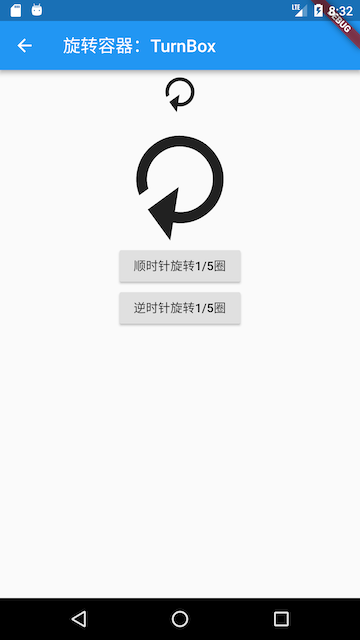

10.3 组合实例：TurnBox
我们之前已经介绍过RotatedBox，它可以旋转子组件，但是它有两个缺点：一是只能将其子节点以90度的倍数旋转；二是当旋转的角度发生变化时，旋转角度更新过程没有动画。
本节我们将实现一个TurnBox组件，它不仅可以以任意角度来旋转其子节点，而且可以在角度发生变化时执行一个动画以过渡到新状态，同时，我们可以手动指定动画速度。
TurnBox的完整代码如下：
import 'package:flutter/widgets.dart';
class TurnBox extends StatefulWidget {
const TurnBox({
Key key,
this.turns = .0, //旋转的“圈”数,一圈为360度，如0.25圈即90度
this.speed = 200, //过渡动画执行的总时长
this.child
}) :super(key: key);
final double turns;
final int speed;
final Widget child;
@override
_TurnBoxState createState() => _TurnBoxState();
}
class _TurnBoxState extends State<TurnBox>
with SingleTickerProviderStateMixin {
AnimationController _controller;
@override
void initState() {
super.initState();
_controller = AnimationController(
vsync: this,
lowerBound: -double.infinity,
upperBound: double.infinity
);
_controller.value = widget.turns;
}
@override
void dispose() {
_controller.dispose();
super.dispose();
}
@override
Widget build(BuildContext context) {
return RotationTransition(
turns: _controller,
child: widget.child,
);
}
@override
void didUpdateWidget(TurnBox oldWidget) {
super.didUpdateWidget(oldWidget);
//旋转角度发生变化时执行过渡动画
if (oldWidget.turns != widget.turns) {
_controller.animateTo(
widget.turns,
duration: Duration(milliseconds: widget.speed??200),
curve: Curves.easeOut,
);
}
}
}
上面代码中：
- 我们是通过组合
RotationTransition和child来实现的旋转效果。 - 在
didUpdateWidget中，我们判断要旋转的角度是否发生了变化，如果变了，则执行一个过渡动画。
下面我们测试一下TurnBox的功能，测试代码如下：
import 'package:flutter/material.dart';
import '../widgets/index.dart';
class TurnBoxRoute extends StatefulWidget {
const TurnBoxRoute({Key? key}) : super(key: key);
@override
_TurnBoxRouteState createState() => _TurnBoxRouteState();
}
class _TurnBoxRouteState extends State<TurnBoxRoute> {
double _turns = .0;
@override
Widget build(BuildContext context) {
return Center(
child: Column(
mainAxisSize: MainAxisSize.min,
children: <Widget>[
TurnBox(
turns: _turns,
speed: 500,
child: const Icon(
Icons.refresh,
size: 50,
),
),
TurnBox(
turns: _turns,
speed: 1000,
child: const Icon(
Icons.refresh,
size: 150.0,
),
),
ElevatedButton(
child: const Text("顺时针旋转1/5圈"),
onPressed: () {
setState(() {
_turns += .2;
});
},
),
ElevatedButton(
child: const Text("逆时针旋转1/5圈"),
onPressed: () {
setState(() {
_turns -= .2;
});
},
)
],
),
);
}
}
测试代码运行后效果如图10-2所示：

当我们点击旋转按钮时，两个图标的旋转都会旋转1/5圈，但旋转的速度是不同的，读者可以自己运行一下示例看看效果。
实际上本示例只组合了RotationTransition一个组件，它是一个最简的组合类组件示例。另外，如果我们封装的是StatefulWidget，那么一定要注意在组件更新时是否需要同步状态。比如我们要封装一个富文本展示组件MyRichText ，它可以自动处理url链接，定义如下：
class MyRichText extends StatefulWidget {
MyRichText({
Key key,
this.text, // 文本字符串
this.linkStyle, // url链接样式
}) : super(key: key);
final String text;
final TextStyle linkStyle;
@override
_MyRichTextState createState() => _MyRichTextState();
}
接下来我们在_MyRichTextState中要实现的功能有两个：
- 解析文本字符串“text”，生成
TextSpan缓存起来； - 在
build中返回最终的富文本样式；
_MyRichTextState 实现的代码大致如下：
class _MyRichTextState extends State<MyRichText> {
TextSpan _textSpan;
@override
Widget build(BuildContext context) {
return RichText(
text: _textSpan,
);
}
TextSpan parseText(String text) {
// 耗时操作：解析文本字符串，构建出TextSpan。
// 省略具体实现。
}
@override
void initState() {
_textSpan = parseText(widget.text)
super.initState();
}
}
由于解析文本字符串，构建出TextSpan是一个耗时操作，为了不在每次build的时候都解析一次，所以我们在initState中对解析的结果进行了缓存，然后再build中直接使用解析的结果_textSpan。这看起来很不错，但是上面的代码有一个严重的问题，就是父组件传入的text发生变化时（组件树结构不变），那么MyRichText显示的内容不会更新，原因就是initState只会在State创建时被调用，所以在text发生变化时，parseText没有重新执行，导致_textSpan任然是旧的解析值。要解决这个问题也很简单，我们只需添加一个didUpdateWidget回调，然后再里面重新调用parseText即可：
@override
void didUpdateWidget(MyRichText oldWidget) {
if (widget.text != oldWidget.text) {
_textSpan = parseText(widget.text);
}
super.didUpdateWidget(oldWidget);
}
有些读者可能会觉得这个点也很简单，是的，的确很简单，之所以要在这里反复强调是因为这个点在实际开发中很容易被忽略，它虽然简单，但却很重要。总之，当我们在State中会缓存某些依赖Widget参数的数据时，一定要注意在组件更新时是否需要同步状态。